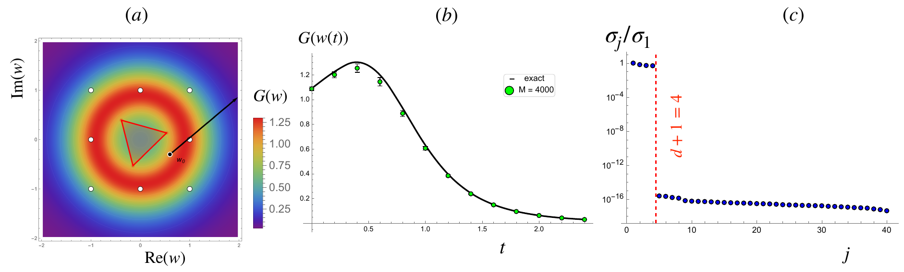

New preprint · August 2026
Quantum geometry from a single snapshot ensemble
In Laughlin quasihole states, one exact occupation law at a generic reference configuration fixes the full complex Gram kernel. Finite snapshots then recover overlaps, Bargmann phases, the quantum metric, and Berry curvature without full state tomography.

Research in context
Exact structures, computable physics
Mathematical physics turns structural principles into calculations that can be checked. I begin with rigid inputs such as symmetry, quantum spaces, spectral triples, matrix models, and exact gauge fields, then work out the equations and geometry they impose. The result is concrete physics: distances and phases, fields and sources, transport laws, and constrained finite models.
Contact
KK space — compactified, but with extra dimensions.
DFG Walter-Benjamin Research Fellow, School of Mathematical Sciences, Queen Mary University of London.
Electron moves a lot,
photon’s the culprit here,
for vacuum is hardly stable.